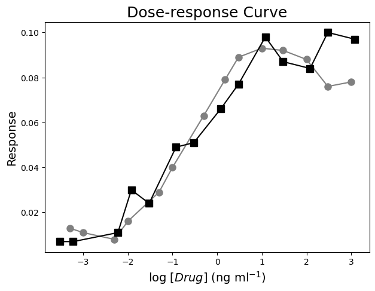
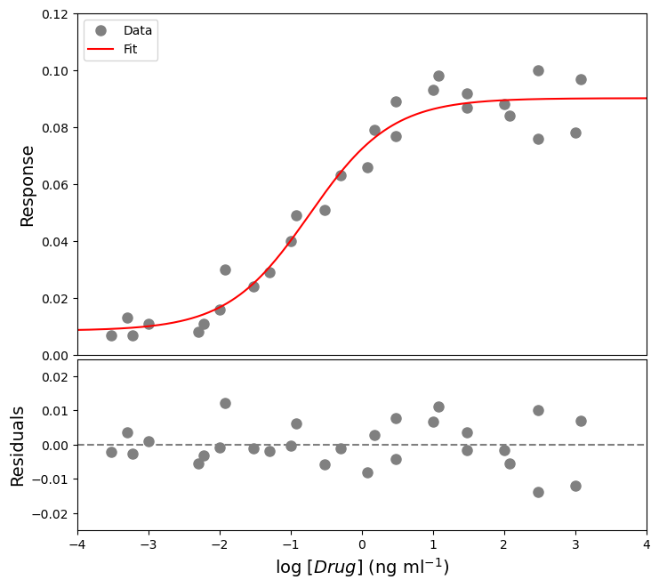
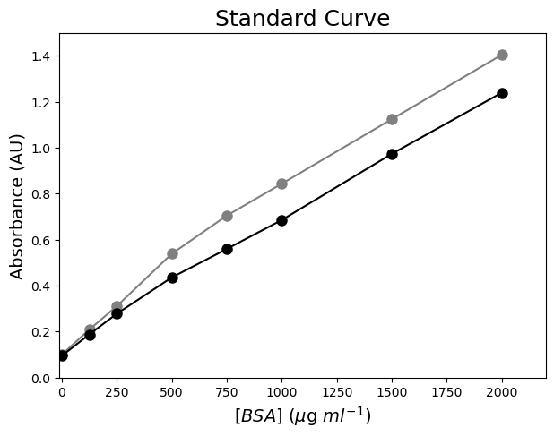
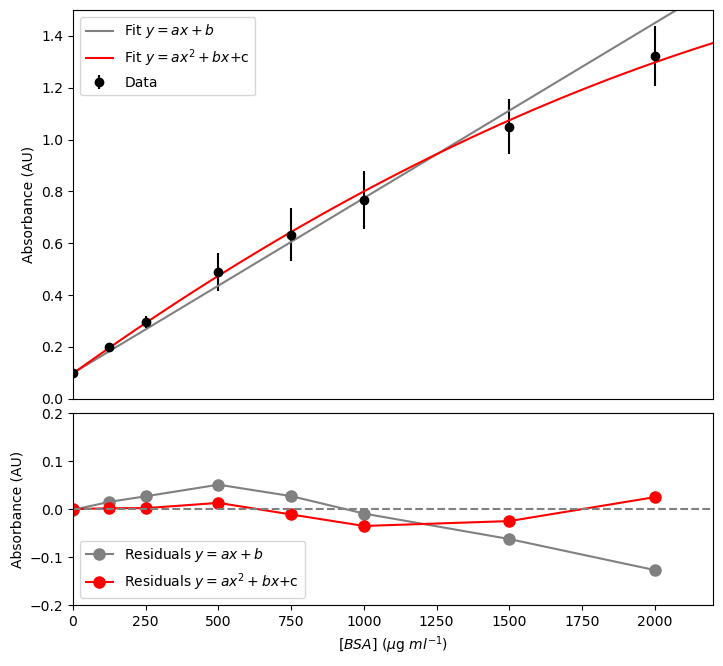
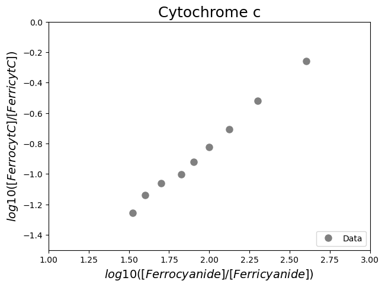
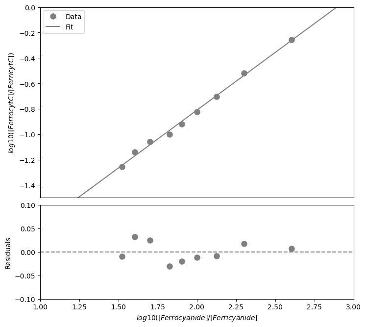

Dose response curve#
#Import the libraries
import numpy as np
import matplotlib.pyplot as plt
import pandas as pd
from scipy.optimize import curve_fit
#Read the Excel file
dfDRC = pd.read_excel ('../data/DoseResponseCurveAssay.xlsx', #create a pandas DataFrame from the filename with file path and extension shown!
sheet_name=0, #use the first sheet (no need to specifically include this as we use the default setting)
header=0) #our data has column names
print(dfDRC) #print the DataFrame created
[Drug 1] (ng/ml) Response 1 [Drug 2] (ng/ml) Response 2
0 0.0005 0.013 0.0003 0.007
1 0.0010 0.011 0.0006 0.007
2 0.0050 0.008 0.0060 0.011
3 0.0100 0.016 0.0120 0.030
4 0.0500 0.029 0.0300 0.024
5 0.1000 0.040 0.1200 0.049
6 0.5000 0.063 0.3000 0.051
7 1.5000 0.079 1.2000 0.066
8 3.0000 0.089 3.0000 0.077
9 10.0000 0.093 12.0000 0.098
10 30.0000 0.092 30.0000 0.087
11 100.0000 0.088 120.0000 0.084
12 300.0000 0.076 300.0000 0.100
13 1000.0000 0.078 1200.0000 0.097
#Calculate log10[Drug]
dfDRC['log[Drug 1]'] = np.log10(dfDRC['[Drug 1] (ng/ml)'])
dfDRC['log[Drug 2]'] = np.log10(dfDRC['[Drug 2] (ng/ml)'])
#Plot the data
plt.figure(figsize=(7,5)) #start a figure object
plt.plot(dfDRC['log[Drug 1]'], dfDRC['Response 1'], #plot a set of x (= the log concentrations) ,y (=the responses) data
marker='o', color='gray', markersize=8) #use a round, gray marker with size 8
plt.plot(dfDRC['log[Drug 2]'], dfDRC['Response 2'], #plot a set of x (= the log concentrations) ,y (=the responses) data, a different experiment
marker='s', color='black', markersize=8) #use a square, black marker with size 8
plt.title('Dose-response Curve', fontsize=18) #title of graph
plt.xlabel('log $[Drug]$ (ng ml$^{-1}$)', fontsize=14) #X-axis label
plt.ylabel('Response', fontsize=14) #Y-axis label
plt.show() #show the figure object

#Define the Hill function
def funcDRC(x, Rmin, Rmax, EC50, nHill): #create the function
"""
Return the Hill equation using Rmin, Rmax, EC50, and nHill
Args:
Rmin, the response effect in the absence of drug
Rmax, the maximum effect
EC50, the relative 50% effective dose or concentration
nHill, the Hill exponent which describes the steepness of the curve
Returns:
the Hill equation function "a * x + b"
"""
return Rmin + (Rmax-Rmin) / (1 + (((10**(np.log10(EC50)))/(10**x))**nHill))
#Combine all data
xDRC= pd.concat([dfDRC['log[Drug 1]'], dfDRC['log[Drug 2]']])
yDRC= pd.concat([dfDRC['Response 1'], dfDRC['Response 2']])
#Fit all data
paramsDRC, params_covarianceDRC = curve_fit(funcDRC, #the function we try to fit to the data
xDRC, #the x values, the log10 concentrations
yDRC, #the y values, the responses
[0.01, 0.12, 0.2, 1]) #the starting parameters, guesses from graph
#Report the fit parameters with standard errors
print("Rmin, the effect in the absence of drug = ", paramsDRC[0], "±", np.sqrt(np.diag(params_covarianceDRC))[0])
print("Rmax, the maximum effect = ", paramsDRC[1], "±", np.sqrt(np.diag(params_covarianceDRC))[1])
print("EC50 in (ng/ml), the relative 50% effective concentration = ", paramsDRC[2], "±", np.sqrt(np.diag(params_covarianceDRC))[2])
print("nHill, the Hill exponent = ", paramsDRC[3], "±", np.sqrt(np.diag(params_covarianceDRC))[3])
Rmin, the effect in the absence of drug = 0.008498737616173405 ± 0.003651549867015662
Rmax, the maximum effect = 0.09020671030749035 ± 0.002591463050546109
EC50 in (ng/ml), the relative 50% effective concentration = 0.18338955867846177 ± 0.048639840934997174
nHill, the Hill exponent = 0.7526341501947715 ± 0.13216413421539713
#Calculate the residuals
residDRC = yDRC - funcDRC(xDRC, *paramsDRC) #calculate the residuals, the star in *paramsDRC unpacks the array so the two optimized parameter values become the second to fifth arguments (after the x-values) to the function
#Generate X-values to calculate the function
xvalues = np.linspace(-10,10,1000) #create an array with 1000 evenly distributed elements between 0 (included) and -10 (included)
#Produce a combined graph
fig = plt.figure() #to create a figure object
xlimits = [-4, 4] #to make sure we use the same of the X-axis boundaries for both plots
ax1 = fig.add_axes([0.1, 0.51, 1, 0.8]) #to specify the coordinates, width and height of the top plot
ax2 = fig.add_axes([0.1, 0.1, 1, 0.4]) #to specify the coordinates, width and height of the bottom plot
ax1.plot(xDRC, yDRC, #plot a set of x (= the log concentrations) ,y (=the responses) data
marker='o', color='gray', markersize=8, linestyle='None', #use a round, gray marker with size 8 but no line
label='Data') #add a legend label
ax1.plot(xvalues, funcDRC(xvalues, *paramsDRC), #add the fitted curve to plot. Use the generated log10 concentrations as x-values. Use the fit parameters to calculate the y-values. The star in *paramsDRC unpacks the array so the two optimized parameter values become the second to fifth arguments (after the x-values) to the function.
color="red", #use a red line
label='Fit') #add a legend label
ax1.axis(xlimits + [0, 0.12]) #sets the X-axis and Y-axis boundaries for the top plot
ax1.tick_params(axis='x', bottom=False, labelbottom=False) #removes the ticks and tick labels on the X-axis for the top plot
ax1.set_ylabel('Response', fontsize=14) #adds Y-axis title for the top plot
ax1.legend(loc='upper left') #include legend
ax2.plot(xDRC, residDRC, #plot a set of x (=the concentrations),y (= the residuals) data points
marker='o', color='gray', linestyle='None', markersize=8) #use a round, gray marker with size 8 but no line
ax2.axhline(0, color='gray', linestyle="--") #adds a horizontal line at y=0
ax2.axis(xlimits + [-0.025,0.025]) #sets the X-axis and Y-axis boundaries for the bottom plot
ax2.set_xlabel('log $[Drug]$ (ng ml$^{-1}$)', fontsize=14) #adds X-axis title for the bottom plot, which is the same for the top plot
ax2.set_ylabel('Residuals', fontsize=14) #adds Y-axis title for the bottom plot
plt.show() #show the figure object

Colorimetric assay#
#Import the libraries
import numpy as np
import matplotlib.pyplot as plt
import pandas as pd
from scipy.optimize import curve_fit
#Read the Excel file
dfCA = pd.read_excel ('../data/ColorimetricAssay.xlsx', #create a pandas DataFrame from the filename with file path and extension shown
sheet_name=0, #use the first sheet (no need to specifically include this as we use the default setting)
skiprows=3, #skip the first three rows
skipfooter=3, #skip the last three rows
usecols=[6,7,8,9], #only import columns 6 to 9 - be aware that column numbers start with zero!
header=None, #our data does not have column names
names=['BSA-1','BSA-2', 'Sample-1', 'Sample-2']) #use BSA-1, BSA-2, Sample-1, and Sample-2 as column names
print (dfCA) #print the DataFrame created
BSA-1 BSA-2 Sample-1 Sample-2
0 1.405 1.240 0.6570 0.6090
1 1.125 0.974 0.4322 0.3690
2 0.844 0.686 0.2870 0.2580
3 0.705 0.560 0.1090 0.1050
4 0.539 0.436 0.0560 0.0648
5 0.311 0.278 0.0586 0.0562
6 0.209 0.188 0.0682 0.0567
7 0.100 0.095 0.0589 0.0563
#Insert a column containing the concentrations of the standards
x1 = [2000, 1500, 1000, 750, 500, 250, 125, 0] #create a list with integers containing the concentrations
dfCA.insert(0, '[BSA]', x1) #insert the column at index 0 (i.e. make it the first column) in dfCA, name the column [BSA], and fill it with the data provided by x1
print(dfCA) #print the DataFrame created
[BSA] BSA-1 BSA-2 Sample-1 Sample-2
0 2000 1.405 1.240 0.6570 0.6090
1 1500 1.125 0.974 0.4322 0.3690
2 1000 0.844 0.686 0.2870 0.2580
3 750 0.705 0.560 0.1090 0.1050
4 500 0.539 0.436 0.0560 0.0648
5 250 0.311 0.278 0.0586 0.0562
6 125 0.209 0.188 0.0682 0.0567
7 0 0.100 0.095 0.0589 0.0563
#Plot the data
plt.figure(figsize=(7,5)) #start a figure object
plt.plot(dfCA['[BSA]'], dfCA['BSA-1'], #plot a set of x (= the concentrations),y (= the measured absorbances) data points
marker='o', color='gray', markersize=8) #use a round, gray marker with size 8
plt.plot(dfCA['[BSA]'], dfCA['BSA-2'], #plot another set of x (= the concentrations),y (= the measured absorbances) data points
marker='o', color='black', markersize=8) #use a round, black marker with size 8
plt.title('Standard Curve', fontsize=18) #title of graph
plt.xlabel('$[BSA]$ ($\mu$g $ml^{-1}$)', fontsize=14) #X-axis label
plt.ylabel('Absorbance (AU)', fontsize=14) #Y-axis label
plt.axis([-10, 2200, 0, 1.5]) #axis boundaries, in this case from -10 to 2200 for the X-axis and 0 to 1.5 for the Y-axis
plt.show() #show the figure object

#Calculate mean and stdev
dfCA['BSA-mean'] = dfCA.iloc[:,1:3].mean(axis=1) #we use axis 1 to get the mean of the elements of one row, we use columns 1 = BSA-1 and 2 = BSA-2, represented by [1:3]. The result is added to a new column.
dfCA['BSA-std'] = dfCA.iloc[:,1:3].std(axis=1) #we use axis 1 to get the standard deviation of the elements of one row, we use columns 1 = BSA-1 and 2 = BSA-2, represented by [1:3]. The result is added to a new column.
print(dfCA) #print the DataFrame created
[BSA] BSA-1 BSA-2 Sample-1 Sample-2 BSA-mean BSA-std
0 2000 1.405 1.240 0.6570 0.6090 1.3225 0.116673
1 1500 1.125 0.974 0.4322 0.3690 1.0495 0.106773
2 1000 0.844 0.686 0.2870 0.2580 0.7650 0.111723
3 750 0.705 0.560 0.1090 0.1050 0.6325 0.102530
4 500 0.539 0.436 0.0560 0.0648 0.4875 0.072832
5 250 0.311 0.278 0.0586 0.0562 0.2945 0.023335
6 125 0.209 0.188 0.0682 0.0567 0.1985 0.014849
7 0 0.100 0.095 0.0589 0.0563 0.0975 0.003536
#Define a line
def funcline(x, a, b): #create the function
"""
Return a line using slope and intercept
Args:
the slope, a
the intercept, b
Returns:
the line function "a * x + b"
"""
return a * x + b
#Define a quadratic curve
def funcpoly2(x, a, b, c): #create the function
"""
Return a quadratic curve using the first and second coefficients, a and b, and constant, c
Args:
the first coefficient, a
the second coefficient, b
the constant, c
Returns:
the quadratic curve function "a * x^2 + b * x + c"
"""
return a * x**2 + b * x + c
#Fit with a line
params1, params_covariance1 = curve_fit(funcline, #the line function we try to fit to the data
dfCA['[BSA]'], #the x values, the concentrations
dfCA['BSA-mean'], #the y values, the measured absorbances
[0.1, 0.1], #the starting parameters for a (=the slope) and b (=the intercept)
sigma=dfCA['BSA-std'], #the standard deviations used for weighted fitting
absolute_sigma=True) #use sigma (=the standard deviations) in an absolute sense
#Fit with a quadratic curve
params2, params_covariance2 = curve_fit(funcpoly2, #the quadratic curve function we try to fit to the data
dfCA['[BSA]'], #the x values, the concentrations
dfCA['BSA-mean'], #the y values, the measured absorbances
[0.1, 0.1, 0.1], #the starting parameters for a (=the first coefficient), b (=the second coefficient), and c (=the constant)
sigma=dfCA['BSA-std'], #the standard deviations used for weighted fitting
absolute_sigma=True) #use sigma (=the standard deviations) in an absolute sense
#Report the fit parameters with standard errors for the line function
print("Slope, a = ", params1[0], "±", np.sqrt(np.diag(params_covariance1))[0])
print("Intercept, b = ", params1[1], "±", np.sqrt(np.diag(params_covariance1))[1])
#Report the fit parameters with standard errors for the quadratic function
print("First coefficient, a =", params2[0], "±", np.sqrt(np.diag(params_covariance2))[0])
print("Second coefficient, b = ", params2[1], "±", np.sqrt(np.diag(params_covariance2))[1])
print("Constant, c = ", params2[2], "±", np.sqrt(np.diag(params_covariance2))[2])
Slope, a = 0.0006752911504972768 ± 3.4711561818850496e-05
Intercept, b = 0.09893123662572621 ± 0.0034483918891948778
First coefficient, a = -1.0251269659569087e-07 ± 4.918443551362741e-08
Second coefficient, b = 0.000804959044796896 ± 7.124165832527459e-05
Constant, c = 0.097629671857749 ± 0.003504479565086863
#Calculate the residuals for the line function
resid1 = dfCA['BSA-mean'] - funcline(dfCA['[BSA]'], *params1) #calculate the residuals, the star in _*params1_ unpacks the array so the two optimized parameter values become the second and third arguments (after the x-values) to the function
#Calculate the residuals for the quadratic function
resid2 = dfCA['BSA-mean'] - funcpoly2(dfCA['[BSA]'], *params2) #calculate the residuals, the star in _*params2_ unpacks the array so the two optimized parameter values become the second, third, and fourth arguments (after the x-values) to the function
#Generate X-values to calculate the function
xvalues = np.linspace(0, 2200, 100) #create an array with 100 evenly distributed elements between 0 (included) and 2200 (included)
#Produce a combined graph
fig = plt.figure() #to create a figure object
xlimits = [0, 2200] #to make sure we use the same of the X-axis boundaries for both plots
ax1 = fig.add_axes([0.1, 0.53, 1, 0.81]) #to specify the coordinates, width and height of the top plot
ax2 = fig.add_axes([0.1, 0.1, 1, 0.4]) #to specify the coordinates, width and height of the bottom plot
ax1.errorbar(dfCA['[BSA]'], dfCA['BSA-mean'], #plot a set of x (= the concentrations),y (= the mean absorbances) data points
yerr=dfCA['BSA-std'], #use an error bar (= the standard deviations)
fmt='o', color='black', ecolor='black', #use a round, black marker with size 8
label='Data') #add a legend label
ax1.plot(xvalues, funcline(xvalues, *params1), #add the fitted line to plot. Use the generated BSA concentrations as x-values. Use the fitted parameters to calculate the y-values. The star in _*params1_ unpacks the array so the two optimized parameter values become the second and third arguments (after the x-values) to the function.
color="gray", linestyle='-', #use a gray line
label='Fit $y=ax+b$') #add a legend label
ax1.plot(xvalues, funcpoly2(xvalues, *params2), #add the fitted quadratic curve to plot. Use the generated BSA concentrations as x-values. Use the fitted parameters to calculate the y-values. The star in _*params2_ unpacks the array so the two optimized parameter values become the second, third, and fourth arguments (after the x-values) to the function.
color="red", linestyle='-', #use a red line
label='Fit $y=ax^2+bx$+c') #add a legend label
ax1.axis(xlimits + [0, 1.5]) #sets the X-axis and Y-axis boundaries for the top plot
ax1.tick_params(axis='x', bottom=False, labelbottom=False) #removes the ticks and tick labels on the X-axis for the top plot
ax1.set_ylabel('Absorbance (AU)') #adds Y-axis title for the top plot
ax1.legend(loc='upper left') #include legend
ax2.plot(dfCA['[BSA]'], resid1, #plot a set of x (= the concentrations),y (= the residuals for y=ax) data points
marker='o', color='gray', linestyle='-', markersize=8, #use gray datapoints size 8 and a line
label='Residuals $y=ax+b$') #add a legend label
ax2.plot(dfCA['[BSA]'], resid2, #plot a set of x (= the concentrations),y (= the residuals for y=ax^2+bx+c) data points
marker='o', color='red', linestyle='-', markersize=8, #use red datapoints size 8 and a line
label='Residuals $y=ax^2+bx$+c') #add a legend label
ax2.axhline(0, color='gray', linestyle="--") #adds a horizontal line at y=0
ax2.axis(xlimits + [-0.2,0.2]) #sets the X-axis and Y-axis boundaries for the bottom plot
ax2.set_xlabel('$[BSA]$ ($\mu$g $ml^{-1}$)') #adds X-axis title for the bottom plot, which is the same for the top plot
ax2.set_ylabel('Absorbance (AU)') #adds Y-axis title for the bottom plot
ax2.legend(loc='lower left') #include legend
plt.show() #show the figure object

#Calculate the concentration for each of the dilution factors
def solcalc(y, a, b, c): #create the function
"""
Solve the quadratic equation for x when y is given using the quadratic formula
Args:
the first coefficient, a
the second coefficient, b
the constant, c
Returns:
the solution x-values of a quadratic equation with y given
"""
return (-b + np.sqrt(b**2 - 4 * a * (c-y)))/(2 * a)
dfCA['Solution-1'] = dfCA['Sample-1'].apply(solcalc, args=params2.tolist()) #apply the function that calculates the solution x-values of a quadratic equation with y given to the Sample-1 absorbances. Use the fitted parameters (converted from NumPy array to list) as arguments for the function (after the y-values).
dfCA['Solution-2'] = dfCA['Sample-2'].apply(solcalc, args=params2.tolist()) #apply the function that calculates the solution x-values of a quadratic equation with y given to the Sample-2 absorbances. Use the fitted parameters (converted from NumPy array to list) as arguments for the function (after the y-values).
#Take the dilution factors into account
dfCA['DF'] = [2.5, 5, 10, 20, 0, 0, 0, 0] #add a column containing the dilution factors
dfCA['Concentration-1'] = dfCA['Solution-1'] * dfCA['DF'] #add a column with the calculated values for undiluted samples for 1
dfCA['Concentration-2'] = dfCA['Solution-2'] * dfCA['DF'] #add a column with the calculated values for undiluted samples for 2
print(dfCA) #print the DataFrame
[BSA] BSA-1 BSA-2 Sample-1 Sample-2 BSA-mean BSA-std Solution-1 \
0 2000 1.405 1.240 0.6570 0.6090 1.3225 0.116673 770.512554
1 1500 1.125 0.974 0.4322 0.3690 1.0495 0.106773 440.328532
2 1000 0.844 0.686 0.2870 0.2580 0.7650 0.111723 242.759724
3 750 0.705 0.560 0.1090 0.1050 0.6325 0.102530 14.150852
4 500 0.539 0.436 0.0560 0.0648 0.4875 0.072832 -51.380310
5 250 0.311 0.278 0.0586 0.0562 0.2945 0.023335 -48.190776
6 125 0.209 0.188 0.0682 0.0567 0.1985 0.014849 -36.391799
7 0 0.100 0.095 0.0589 0.0563 0.0975 0.003536 -47.822589
Solution-2 DF Concentration-1 Concentration-2
0 697.174408 2.5 1926.281385 1742.936019
1 352.991523 5.0 2201.642660 1764.957615
2 204.556761 10.0 2427.597239 2045.567610
3 9.166854 20.0 283.017031 183.337089
4 -40.574617 0.0 -0.000000 -0.000000
5 -51.135052 0.0 -0.000000 -0.000000
6 -50.521841 0.0 -0.000000 -0.000000
7 -51.012417 0.0 -0.000000 -0.000000
#Calculate the overal concentration
dfCAnew=dfCA.iloc[0:3,-2:] #create a new DataFrame containing all values you want to calculate the mean and standard deviation for
print(dfCAnew) #print the new DataFrame
print(np.array(dfCAnew).mean()) #convert the new DataFrame into a NumPy array and calulcate the mean of all elements
print(np.array(dfCAnew).std()) #convert the new DataFrame into a NumPy array and calulcate the standard deviation of all elements
Concentration-1 Concentration-2
0 1926.281385 1742.936019
1 2201.642660 1764.957615
2 2427.597239 2045.567610
2018.1637547413357
241.6461886993642
Redox potential#
#Import the libraries
import numpy as np
import matplotlib.pyplot as plt
import pandas as pd
from scipy.optimize import curve_fit
#Read the Excel file
dfRP = pd.read_excel ('../data/RedoxPotential.xlsx', #create a pandas DataFrame from the filename with file path and extension shown
sheet_name=0, #use the first sheet (no need to specifically include this as we use the default setting)
header=0) #our data has column names
print(dfRP) #print the DataFrame created
A550nm (AU) [Ferricyanide] (mM) [Ferrocyanide] (mM) \
0 0.264 10.000000 0.000000
1 0.738 0.000000 0.000000
2 0.433 0.024938 9.975062
3 0.374 0.049751 9.950249
4 0.342 0.074442 9.925558
5 0.326 0.099010 9.900990
6 0.315 0.123457 9.876543
7 0.307 0.147783 9.852217
8 0.302 0.196078 9.803922
9 0.296 0.243902 9.756098
10 0.289 0.291262 9.708738
[Sodium dithionite] (mM)
0 0
1 10
2 0
3 0
4 0
5 0
6 0
7 0
8 0
9 0
10 0
#Calculate log10([Ferrocyanide]/[Ferricyanide])
dfRP['Log10([FerroCN]/[FerriCN])'] = np.log10((dfRP.iloc[2:,2] / dfRP.iloc[2:,1])) #Calculate log10([Ferrocyanide]/[Ferricyanide]), but not for the first two rows as specified using iloc[start_index_row:(to end row), index_column] = [2:,2] and [2:,1] with column 1 (we start counting from 0!) = [Ferricyanide] and column 2 = [Ferrocyanide]. Store the information in a new column called 'Log10([FerroCN]/[FerriCN])'.
print(dfRP) #print the DataFrame created
A550nm (AU) [Ferricyanide] (mM) [Ferrocyanide] (mM) \
0 0.264 10.000000 0.000000
1 0.738 0.000000 0.000000
2 0.433 0.024938 9.975062
3 0.374 0.049751 9.950249
4 0.342 0.074442 9.925558
5 0.326 0.099010 9.900990
6 0.315 0.123457 9.876543
7 0.307 0.147783 9.852217
8 0.302 0.196078 9.803922
9 0.296 0.243902 9.756098
10 0.289 0.291262 9.708738
[Sodium dithionite] (mM) Log10([FerroCN]/[FerriCN])
0 0 NaN
1 10 NaN
2 0 2.602060
3 0 2.301030
4 0 2.124939
5 0 2.000000
6 0 1.903090
7 0 1.823909
8 0 1.698970
9 0 1.602060
10 0 1.522879
#Calculate log10([FerrocytC]/[FerricytC]) using a function
def funclog10_FerrocytC_FerricytC(Aobs, Aferri, Aferro): #create the function
"""
Calculate log10([FerrocytC]/[FerricytC]) = log10((Aobs - Aferri)/(Aferro - Aobs))
Args:
Aobs in AU = the observed signal for a mixture of ferro- and ferricyt c. The column containing the absorbances at 550 nm (in AU) in the presence of 25 to 300 μM ferricyanide and 9.975 to 9.700 mM ferrocyanide.
Aferri in AU = the observed signal for fully oxidized cyt c, i.e. ferricyt c. The absorbance at 550 nm (in AU) in the presence of 10 mM potassium ferricyanide.
Aferro in AU = the observed signal for fully reduced cyt c, i.e. ferrocyt c. The absorbance at 550 nm (in AU) in the presence of 10 mM sodium dithionite.
Returns:
log10([FerrocytC]/[FerricytC])
"""
log10FerrocytCFerricytC = np.log10((Aobs-Aferri) / (Aferro-Aobs))
return log10FerrocytCFerricytC
dfRP['Log10([FerrocytC]/[FerricytC])'] = dfRP.iloc[2:,0].apply(funclog10_FerrocytC_FerricytC, #Apply the function with arguments Aferri and Aferro (after Aobs) to our data set. Use iloc[start_index_row:(to end row), index_column] = [2:,0] to select Aobs for the data set but not for the first two rows. Store the information in a new column called 'Log10([FerrocytC]/[FerricytC])'.
args=(dfRP.iloc[0,0], dfRP.iloc[1,0])) #Use iloc[index_row,index_column] to select Aferri = [0,0] and Aferro = [1,0] for the data set.
print(dfRP) #print the DataFrame created
A550nm (AU) [Ferricyanide] (mM) [Ferrocyanide] (mM) \
0 0.264 10.000000 0.000000
1 0.738 0.000000 0.000000
2 0.433 0.024938 9.975062
3 0.374 0.049751 9.950249
4 0.342 0.074442 9.925558
5 0.326 0.099010 9.900990
6 0.315 0.123457 9.876543
7 0.307 0.147783 9.852217
8 0.302 0.196078 9.803922
9 0.296 0.243902 9.756098
10 0.289 0.291262 9.708738
[Sodium dithionite] (mM) Log10([FerroCN]/[FerriCN]) \
0 0 NaN
1 10 NaN
2 0 2.602060
3 0 2.301030
4 0 2.124939
5 0 2.000000
6 0 1.903090
7 0 1.823909
8 0 1.698970
9 0 1.602060
10 0 1.522879
Log10([FerrocytC]/[FerricytC])
0 NaN
1 NaN
2 -0.256413
3 -0.519709
4 -0.705601
5 -0.822506
6 -0.918770
7 -1.001009
8 -1.059703
9 -1.140272
10 -1.254306
#Plot the data
plt.figure(figsize=(7,5)) #start a figure object
plt.plot(dfRP.iloc[2:,4], dfRP.iloc[2:,5], #plot a set of x (= Log10([FerroCN]/[FerriCN]), i.e. column 4),y (= Log10([FerrocytC]/[FerricytC]), i.e. column 5) data points, but do not include the first two rows as specified using iloc[start_index_row:(to end row), index_column] = [2:,4] and [2:,5]
marker='o', color='gray', markersize=8, linestyle='None', #use a round, gray marker with size 8; use no line
label='Data') #add a legend label
plt.title('Cytochrome c', fontsize=18) #title of graph
plt.xlabel('$log10([Ferrocyanide]/[Ferricyanide]$)', fontsize=14) #X-axis label
plt.ylabel('$log10([FerrocytC]/[FerricytC])$', fontsize=14) #Y-axis label
plt.axis([1, 3, -1.5, 0]) #axis boundaries, in this case from 1 to 3 for the X-axis and -1.5 to 0 for the Y-axis
plt.legend(loc='lower right') #show legend in lower right corner
plt.show() #show the figure object

#Define a line
def funcline(x, a, b): #create the function
"""
Return a line using slope and intercept
Args:
the slope, a
the intercept, b
Returns:
the line function "a * x + b"
"""
return a * x + b
#Fit the data with a line
paramsCraig, params_covCraig = curve_fit(funcline, #the line function we try to fit to the data
dfRP.iloc[2:,4], #the x values, Log10([FerroCN]/[FerriCN]), but not the first two rows
dfRP.iloc[2:,5], #the y values, Log10([FerrocytC]/[FerricytC]), but not the first two rows
[1, -2]) #the starting parameters for a (=the slope) and b (=the intercept)
#Report the fit parameters with standard errors for the line function
print("Slope, a = ", paramsCraig[0], "±", np.sqrt(np.diag(params_covCraig))[0])
print("Intercept, b = ", paramsCraig[1], "±", np.sqrt(np.diag(params_covCraig))[1])
Slope, a = 0.9092069993196864 ± 0.02311791055989715
Intercept, b = -2.6290200322892794 ± 0.04578505242299154
#Calculate the residuals
resid = dfRP.iloc[2:,5] - funcline(dfRP.iloc[2:,4], *paramsCraig) #calculate the residuals, the star in _*paramsCraig_ unpacks the array so the two optimized parameter values become the second and third arguments (after the x-values) to the function
#Generate X-values to calculate the function
xvalues = np.linspace(1, 3, 100) #create an array with 100 evenly distributed elements between 0 (included) and 3 (included)
#Produce a combined graph
fig = plt.figure() #to create a figure object
xlimits = [1, 3] #to make sure we use the same of the X-axis boundaries for both plots
ax1 = fig.add_axes([0.1, 0.53, 1, 0.81]) #to specify the coordinates, width and height of the top plot
ax2 = fig.add_axes([0.1, 0.1, 1, 0.4]) #to specify the coordinates, width and height of the bottom plot
ax1.plot(dfRP.iloc[2:,4], dfRP.iloc[2:,5], #plot a set of x (= Log10([FerroCN]/[FerriCN]), i.e. column 4),y (= Log10([FerrocytC]/[FerricytC]), i.e. column 5) data points, but do not include the first two rows as specified using iloc[start_index_row:(to end row), index_column] = [2:,4] and [2:,5]
marker='o', color='gray', markersize=8, linestyle='None', #use a round, gray marker with size 8; use no line
label='Data') #add a legend label
ax1.plot(xvalues, funcline(xvalues, *paramsCraig), #add the fitted line to plot. Use the generated Log10([FerroCN]/[FerriCN] array as x-values. Use the fitted parameters to calculate the y-values. The star in _*paramsCraig_ unpacks the array so the two optimized parameter values become the second and third arguments (after the x-values) to the function.
color="gray", linestyle='-', #use a gray line
label='Fit') #add a legend label
ax1.axis(xlimits + [-1.5, 0]) #sets the X-axis and Y-axis boundaries for the top plot
ax1.tick_params(axis='x', bottom=False, labelbottom=False) #removes the ticks and tick labels on the X-axis for the top plot
ax1.set_ylabel('$log10([FerrocytC]/[FerricytC])$') #adds Y-axis title for the top plot
ax1.legend(loc='upper left') #include legend
ax2.plot(dfRP.iloc[2:,4], resid, #plot a set of x (= Log10([FerroCN]/[FerriCN]),y (= the residuals for y=ax+b) data points
marker='o', color='gray', linestyle='None', markersize=8) #use gray datapoints size 8 and no line
ax2.axhline(0, color='gray', linestyle="--") #adds a horizontal line at y=0
ax2.axis(xlimits + [-0.1,0.1]) #sets the X-axis and Y-axis boundaries for the bottom plot
ax2.set_xlabel('$log10([Ferrocyanide]/[Ferricyanide]$') #adds X-axis title for the bottom plot, which is the same for the top plot
ax2.set_ylabel('Residuals') #adds Y-axis title for the bottom plot
plt.show() #show the figure object

#Define the function
def funcmidredpot(a, b, da, db): #create the function
"""
Return the midpoint redox potential with uncertainty
Args:
the slope, a
the standard deviation of the slope, da
the intercept, b
the standard deviation of the intercept, db
Returns:
the midpoint redox potential
the uncertainty of the midpoint redox potential, using error propagation rules
"""
rp = 0.430 - 0.059 * (-b / a)
drp = 0.059 * np.sqrt((a**2 * db**2 + b**2 * da**2)/(a**4))
return rp, drp
#Apply the function
midredpot = funcmidredpot(*paramsCraig, *np.sqrt(np.diag(params_covCraig))) #Use the fitted parameters with standard deviations (the stars unpack both arrays) as arguments for the function.
print("The midpoint redox potential of cytochrome c is", midredpot[0], "+/-", midredpot[1], "V. The uncertainty is one standard deviation and is derived from the errors on the fit.") #Print the result of the experiment.
The midpoint redox potential of cytochrome c is 0.2593983856029154 +/- 0.005257729412117667 V. The uncertainty is one standard deviation and is derived from the errors on the fit.